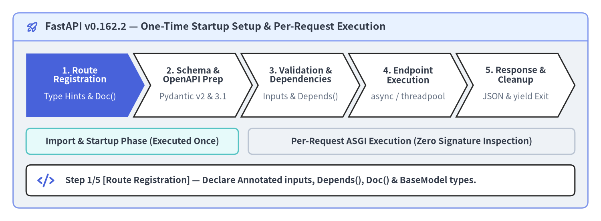
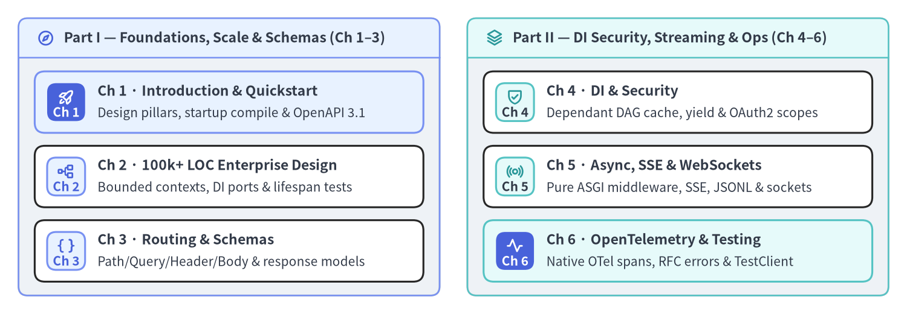

FastAPI v0.162.2 — Visual Architecture Guide
FastAPI (v0.162.2) is a high-performance, type-driven ASGI web framework that compiles standard Python >=3.10 annotations into validated dependency graphs, Rust-backed Pydantic v2 serializers, and OpenAPI 3.1.0 specifications. This unofficial bilingual handbook illustrates FastAPI's internal architecture and 100,000+ LOC production patterns as code using Drawlib.

Source Code
from drawlib.anim import Animation
from drawlib.canvas import save, setup
from drawlib.icons import phosphor
from drawlib.shapes import rectangle
from drawlib.smartarts import ChevronProcess, Panel
from drawlib.styles import Styles
from drawlib.text import text
setup(width=184, height=68, dpi=150)
anim = Animation(fps=1.6)
stages = [
("1. Annotated\nSignature", "Type Hints & Doc()"),
("2. Startup\nCompile", "Dependant & Models"),
("3. ASGI &\nDI Solve", "solve_dependencies()"),
("4. Endpoint\nDispatch", "Async / Threadpool"),
("5. Serialize &\nTeardown", "Pydantic v2 & yield"),
]
stage_notes = [
(
phosphor.code,
"Step 1/5 [Declaration] — Declare Annotated[T, Path/Query/Depends, Doc()] & BaseModel types once.",
),
(
phosphor.gear,
"Step 2/5 [Startup] — get_dependant() & TypeAdapter pre-compile route closures before serving traffic.",
),
(
phosphor.git_branch,
"Step 3/5 [ASGI Ingress] — Match route, parse body_field, and resolve cached Dependant DAG nodes.",
),
(
phosphor.lightning,
"Step 4/5 [Execution] — Await async def on event loop or run sync def safely in AnyIO threadpool.",
),
(
phosphor.check_circle,
"Step 5/5 [Egress] — Serialize via Rust pydantic-core and unwind AsyncExitStack yield dependencies.",
),
]
for step in range(len(stages)):
is_last = step == len(stages) - 1
with anim.frame(duration=2.8 if is_last else None, clear=True):
outer = Panel(
"FastAPI v0.162.2 — Compile-Once & Zero-Reflection ASGI Pipeline",
style=Styles.Neutral.patch(shape_r=2.0),
header_style=Styles.PrimaryNeutral.patch(shape_line_width=1.2),
text_style=Styles.DarkBold.patch(text_size=12.0),
icon=phosphor.rocket_launch,
icon_style=Styles.PrimaryBold,
header_variant="filled",
header_height=8.5,
)
outer.draw((4.0, 4.0), width=176.0, height=60.0)
# Phase baseline bands (always visible from Frame 1)
s_style = Styles.SecondaryNeutral if step <= 1 else Styles.Neutral
r_style = Styles.PrimaryNeutral if step >= 2 else Styles.Neutral
rectangle((40.5, 24.5), width=65.0, height=8.0, style=s_style.patch(shape_r=1.5))
text(
(40.5, 24.5),
"Import & Startup Phase (Executed Once)",
style=Styles.DarkBold.patch(text_size=10.5),
)
rectangle((126.0, 24.5), width=100.0, height=8.0, style=r_style.patch(shape_r=1.5))
text(
(126.0, 24.5),
"Per-Request ASGI Hot Path (Zero inspect.signature())",
style=Styles.DarkBold.patch(text_size=10.5),
)
# Animated 5-stage ChevronProcess
proc = ChevronProcess(
style=Styles.Neutral,
text_style=Styles.DarkBold.patch(text_size=10.5),
description_style=Styles.Dark.patch(text_size=10.0),
corner_angle=62.0,
spacing=1.8,
flat_left_end=True,
)
for i, (title, desc) in enumerate(stages):
if i == step:
c_style = Styles.PrimaryFlat
t_style = Styles.WhiteBold.patch(text_size=10.5)
d_style = Styles.White.patch(text_size=10.0)
elif i < 2:
c_style = Styles.SecondaryNeutral
t_style = Styles.DarkBold.patch(text_size=10.5)
d_style = Styles.Dark.patch(text_size=10.0)
else:
c_style = Styles.PrimaryNeutral
t_style = Styles.DarkBold.patch(text_size=10.5)
d_style = Styles.Dark.patch(text_size=10.0)
proc.add(
title,
description=desc,
style=c_style,
text_style=t_style,
description_style=d_style,
show=(i <= step),
)
proc.draw(xy=(8.0, 32.0), width=168.0, height=19.5)
# Active step callout bar at bottom
rectangle((92.0, 12.5), width=168.0, height=9.5, style=Styles.White.patch(shape_r=1.5))
note_icon, note_text = stage_notes[step]
note_icon((14.0, 12.5), width=5.2, style=Styles.PrimaryBold)
text(
(20.0, 12.5),
note_text,
style=Styles.DarkBold.patch(text_size=10.5, halign="left"),
)
save()
FastAPI v0.162.2 Engineering Snapshot
Rather than treating routing, validation, dependency injection, and API documentation as disconnected plugins, FastAPI unifies them around standard Python type hints. Static AST and architectural analysis from the companion PNI501 Diagnostic Report highlights how compact and cohesive the upstream codebase remains at v0.162.2:
| Dimension | Verified v0.162.2 Metric |
Architectural Significance |
|---|---|---|
| Framework Footprint | 52 Python modules · 19,837 LOC |
Clean 5-tier downward layering from FastAPI facade down to ModelField adapters |
| Automated Test Suite | 273 test modules |
Comprehensive verification across routing, OpenAPI 3.1.0, DI scopes, SSE, and OTel |
| Core Runtime Dependencies | 6 direct packages (pyproject.toml) |
starlette, pydantic, typing-extensions, typing-inspection, annotated-doc, opentelemetry-api |
| Supported Python Versions | Python >=3.10 (3.10 – 3.14) |
Full PEP 561 py.typed static type coverage and PEP 727 Doc() metadata |
| PNI501 Diagnostic Rating | 93 / 100 (Grade S) |
Zero committed secrets, deterministic uv.lock, and strong boundary modularity |
Single Source of Truth in 20 Lines
A single endpoint signature simultaneously defines URL extraction, regex and length constraints, inline OpenAPI parameter documentation, response serialization, and static type checking:
from typing import Annotated
from annotated_doc import Doc
from fastapi import FastAPI, Path, Query
from pydantic import BaseModel
app = FastAPI(title="Catalog Service", version="1.0.0")
class ProductSummary(BaseModel):
sku: str
price_cents: int
currency: str
@app.get("/products/{sku}", response_model=ProductSummary)
async def read_product(
sku: Annotated[str, Path(min_length=3, max_length=32), Doc("Warehouse SKU code.")],
currency: Annotated[str, Query(pattern="^[A-Z]{3}$"), Doc("ISO 4217 currency.")] = "USD",
) -> ProductSummary:
return ProductSummary(sku=sku, price_cents=4900, currency=currency)
6-Chapter Architecture Curriculum
This visual guide progresses systematically from your first validated endpoint to 100,000+ LOC modular monolith patterns, recursive Dependant DAG execution, native Server-Sent Events (fastapi.sse), and native OpenTelemetry (fastapi.telemetry):

Source Code
from drawlib.canvas import save, setup
from drawlib.icons import phosphor
from drawlib.smartarts import CardList, Panel
from drawlib.styles import Styles
setup(width=196, height=68, dpi=150)
left_panel = Panel(
"Part I — Foundations, Scale & Schemas (Ch 1–3)",
style=Styles.Neutral.patch(shape_r=2.0),
header_style=Styles.PrimaryNeutral.patch(shape_line_width=1.2),
text_style=Styles.DarkBold.patch(text_size=11.0),
icon=phosphor.compass,
icon_style=Styles.PrimaryBold,
header_variant="filled",
header_height=8.5,
)
left_panel.draw((4.0, 4.0), width=91.0, height=60.0)
l_xy, l_w, l_h = left_panel.get_content_box((4.0, 4.0), width=91.0, height=60.0, padding=(3.5, 3.0))
cl_left = CardList(
style=Styles.White,
text_style=Styles.DarkBold.patch(text_size=11.0),
description_style=Styles.Dark.patch(text_size=10.0),
badge_shape="rounded_rect",
badge_style=Styles.PrimaryNeutral,
badge_text_style=Styles.PrimaryBold.patch(text_size=10.0),
icon_style=Styles.PrimaryBold,
direction="vertical",
spacing=2.8,
)
cl_left.add(
"Ch 1 · Introduction & Quickstart",
"Design pillars, startup compile & OpenAPI 3.1",
badge_text="Ch 1",
icon=phosphor.rocket_launch,
style=Styles.PrimaryNeutral,
badge_style=Styles.PrimaryFlat,
badge_text_style=Styles.WhiteBold.patch(text_size=10.0),
icon_style=Styles.WhiteBold,
)
cl_left.add(
"Ch 2 · 100k+ LOC Enterprise Design",
"Bounded contexts, DI ports & lifespan tests",
badge_text="Ch 2",
icon=phosphor.tree_structure,
)
cl_left.add(
"Ch 3 · Routing & Schemas",
"Path/Query/Header/Body & response models",
badge_text="Ch 3",
icon=phosphor.brackets_curly,
)
cl_left.draw(xy=l_xy, width=l_w, height=l_h)
right_panel = Panel(
"Part II — DI Security, Streaming & Ops (Ch 4–6)",
style=Styles.Neutral.patch(shape_r=2.0),
header_style=Styles.SecondaryNeutral.patch(shape_line_width=1.2),
text_style=Styles.DarkBold.patch(text_size=11.0),
icon=phosphor.stack,
icon_style=Styles.SecondaryBold,
header_variant="filled",
header_height=8.5,
)
right_panel.draw((101.0, 4.0), width=91.0, height=60.0)
r_xy, r_w, r_h = right_panel.get_content_box((101.0, 4.0), width=91.0, height=60.0, padding=(3.5, 3.0))
cl_right = CardList(
style=Styles.White,
text_style=Styles.DarkBold.patch(text_size=11.0),
description_style=Styles.Dark.patch(text_size=10.0),
badge_shape="rounded_rect",
badge_style=Styles.SecondaryNeutral,
badge_text_style=Styles.DarkBold.patch(text_size=10.0),
icon_style=Styles.SecondaryBold,
direction="vertical",
spacing=2.8,
)
cl_right.add(
"Ch 4 · DI & Security",
"Dependant DAG cache, yield & OAuth2 scopes",
badge_text="Ch 4",
icon=phosphor.shield_check,
)
cl_right.add(
"Ch 5 · Async, SSE & WebSockets",
"Pure ASGI middleware, SSE, JSONL & sockets",
badge_text="Ch 5",
icon=phosphor.broadcast,
)
cl_right.add(
"Ch 6 · OpenTelemetry & Testing",
"Native OTel spans, RFC errors & TestClient",
badge_text="Ch 6",
icon=phosphor.pulse,
style=Styles.SecondaryNeutral,
badge_style=Styles.PrimaryFlat,
badge_text_style=Styles.WhiteBold.patch(text_size=10.0),
icon_style=Styles.WhiteBold,
)
cl_right.draw(xy=r_xy, width=r_w, height=r_h)
save()
| Chapter | Pages & Core Topics | Key FastAPI Subsystems Covered |
|---|---|---|
| 1. Introduction & Quickstart | Why FastAPI & Design Philosophy · Quickstart & Interactive OpenAPI | FastAPI, Annotated, Doc(), APIRoute, Swagger UI & ReDoc |
| 2. Scaling to 100k+ LOC | Bounded Contexts & Layering · Enterprise DI, Lifespan & Testing | APIRouter, lifespan, dependency_overrides, domain boundaries |
| 3. Routing, Validation & Models | Path, Query, Header, Cookie & Body · Response Serialization & OpenAPI 3.1 | Path, Query, Header, Cookie, Body, ModelField, get_openapi |
| 4. Dependency Injection & Security | Dependant DAG, Caching & Scopes · Authentication & OAuth2 Scopes | Depends, Security, solve_dependencies, AsyncExitStack, SecurityScopes |
| 5. Async, Middleware & Streaming | ASGI Middleware & Threadpool · Native SSE, JSONL & WebSockets | run_in_threadpool, EventSourceResponse, ServerSentEvent, WebSocket |
| 6. Observability, Errors & Testing | Native OpenTelemetry & Exceptions · Testing Patterns & Production ASGI | TelemetryConfig, NativeTelemetry, RequestValidationError, TestClient |
Attribution & Companion Diagnostic Report
- Respectful Upstream Attribution: FastAPI was created and is maintained by Sebastián Ramírez (
@tiangolo) and the FastAPI community under the MIT License. For authoritative documentation, release notes, and community resources, always consult https://fastapi.tiangolo.com/ and github.com/fastapi/fastapi. - Unofficial Drawlib & PNI501 Showcase: This documentation portal is an independent architectural study authored as code with Drawlib (
type = "site", bilingualen/ja) alongside the automated PNI501 Engineering & Architecture Diagnostic Report. Begin reading with Chapter 1: Why FastAPI & Design Philosophy or jump straight into hands-on code in Quickstart & Interactive OpenAPI.